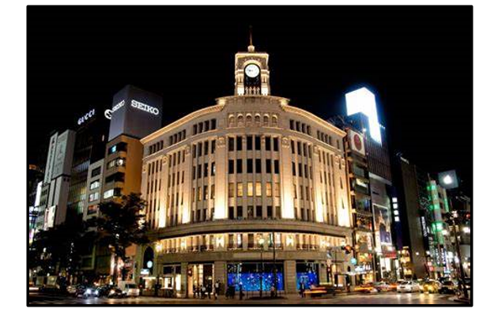

トップへ戻る
ABOUT
「HISTORY」
創業者の初代シェフ七条平太郎は、1717年に江戸(今の東京都銀座)に店を
構え始めました。
おかげさまで2017年に創業300周年を迎えることができました。
現在、第16代七条アンドレ秀一によって伝統の味を受け継いでおります。
また、現在はPR（PonzuRacing）様とパートナーシップを結んでおります。

「ACCESS」
住所 東京都中央区銀座48丁目69番地 ホテルPINGA本館35階
交通アクセス 東京メトロ有楽町線銀座48丁目駅より徒歩3分
電話番号 03-#969-#6261（電話にての完全予約制です）
※周辺にて路上駐車が問題となっています。
発覚した際は、今後一切のご来店を拒否させていただきます。
「INTERIOR」
店内はイタリアのカッシーナという「家具界のフェラーリ」とも呼ばれる家具を
使用しております。
食器にもこだわりを持ち、宮内庁御用達の
"漆器山田平安堂"の食器を使用しております。
個室を希望するお客様の為に個室をご用意しております。
店内にはクラシック音楽が流れており、落ち着いた環境で召し上がることができます。
その他ご不明な点がありましたら、お気軽にスタッフまでお問い合わせください。
「STAFF」
総合リーダー安室、サブリーダー赤井、毛利(厨房対応)
吉田(厨房対応)、仁(会計)、
服部(お客様対応)、佐藤(お客様対応)
高木(お客様対応)、魚塚(お客様対応)
※写真は創業初期のもの。前より３列目中央の坊主頭が初代シェフ七条平八郎
MAINPAGEに戻るには上部のTHE.CURRYかこちらをclick